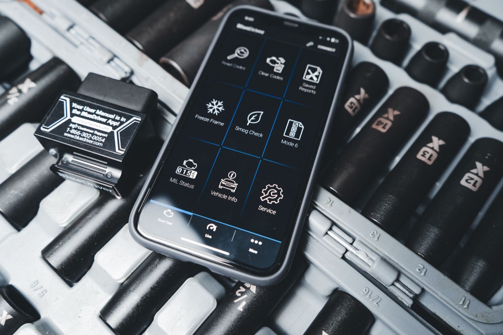
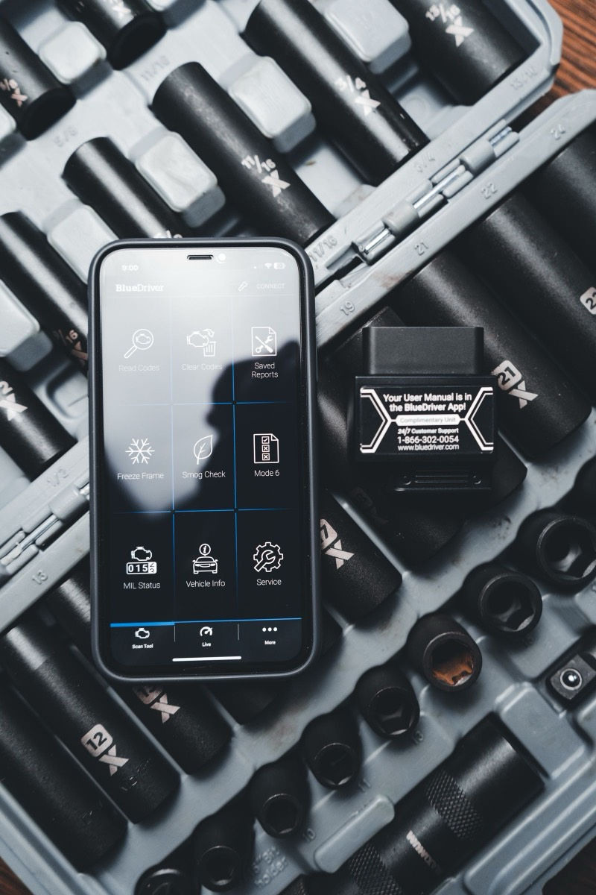
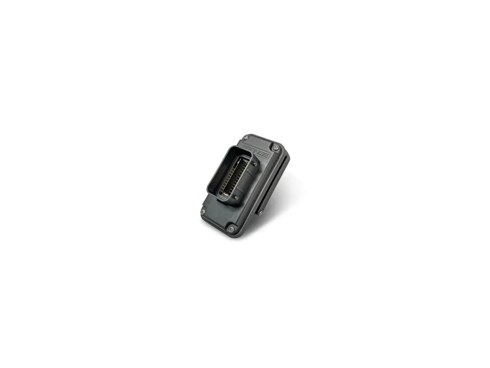
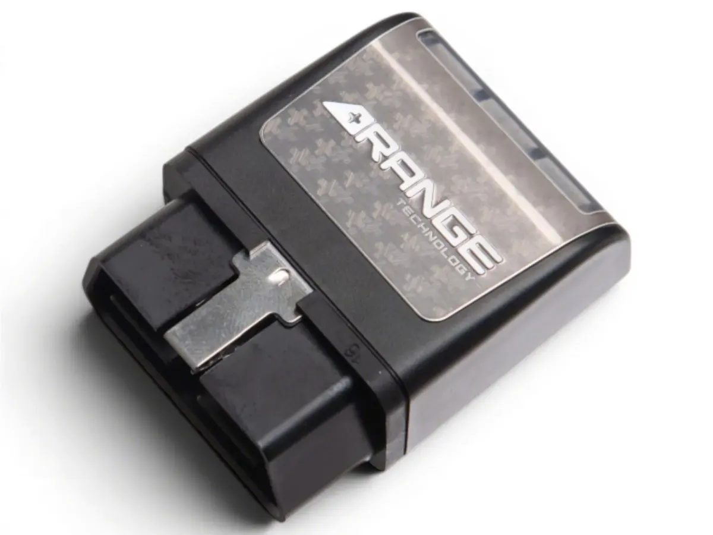

AFM and DFM Disablers: Which Ones Are Actually CARB Legal
The most popular cylinder-deactivation disabler in the country — 466 reviews at 4.8 stars on AmericanTrucks alone — carries a warning on the manufacturer's own product page that reads, in capitals: "This product is NOT LEGAL FOR SALE OR USE IN THE STATE OF CALIFORNIA." The retailer's page says nothi
A disabler plugs into the OBD port and tells the ECU the hood is open, so the truck stays in V8. It is not a tune, it does not add power, and it does not touch the ECU’s calibration.
The awkward part is legality: no CARB Executive Order was found for these devices, so in California they are not legal for street use — and because the device is a physical plug left in the port, it is visible at inspection in a way a flash is not.

The most popular cylinder-deactivation disabler in the country — 466 reviews at 4.8 stars on AmericanTrucks alone — carries a warning on the manufacturer’s own product page that reads, in capitals: “This product is NOT LEGAL FOR SALE OR USE IN THE STATE OF CALIFORNIA.”
The retailer’s page says nothing about it. No California note, no CARB mention, nothing in the features list. You would have to leave AmericanTrucks, find Range Technology’s own site, and scroll to the emissions block at the bottom to learn that the thing you are about to buy will fail a smog visual inspection in the state you live in.
That is the whole reason this article exists. Every price, review count and emissions statement below was read live on 16 November 2026, and the emissions statements come from the manufacturer, not the store.
AFM and DFM are different systems, and the parts are not interchangeable
GM used two generations of cylinder deactivation. AFM — Active Fuel Management — shuts down a fixed set of four cylinders, on engines through roughly 2021. DFM — Dynamic Fuel Management — can run on any number of cylinders from one to eight and arrived on the 2019 trucks, becoming universal on the refreshed 2022.5 models.
A disabler built for AFM will not work on a DFM truck, and buying by model year is how people get it wrong. The split is by engine and build date, not by the year on the door.

The four modules, and what each is actually legal for
| Part | Price | Fits | Rating | California |
|---|---|---|---|---|
| Range AFM/DFM Disabler RA003B | $280.95 | 07–21 Silverado 1500, 2022 LTD | 4.8 · 466 | Not legal — no EO |
| Range DFM Module RA007 | $264.95 | 22–26 V8 Silverado 1500 | 4.7 · 131 | Legal — EO D-115-35 |
| Diablosport Sprint S1000 | $242.95 (from $270.95) | 06–16 5.3L, 14–16 4.3L, 07–13 6.0L, 10–16 6.2L | 4.7 · 15 | No EO stated |
| Range Pulsar LT | $554.95 (from $616.95) | 15–18 5.3L Silverado 1500 | 4.3 · 18 | No EO stated on listing |
Range also sells a DFM Module and Amp’d Pedal Controller Kit at $533.90 (down from $542.90) that pairs RA007 with a throttle controller. It carries the same EO because it is the same module.

The California problem, in detail
California does not regulate whether a part changes emissions output. It regulates whether the part has been approved. A device that leaves the engine running on all eight cylinders needs a California Air Resources Board Executive Order number to be sold or installed on a registered vehicle in the state, and without one it fails the visual inspection portion of a smog check regardless of what comes out of the tailpipe.
Here is what each manufacturer actually publishes.
Range RA003B — no EO. The emissions block on Range’s own page for this part states that it is legal under the provisions of EPA’s Tampering Policy dated 23 November 2020, and then: “This product is NOT LEGAL FOR SALE OR USE IN THE STATE OF CALIFORNIA. Testing with the California Air Resources Board, in order to achieve 50-state compliance, is pending with CARB.” Its spec sheet lists Emission Code 7.
Range RA007 — EO D-115-35. Same site, different part: “50-State CARB Compliant EO# D-115-35”, spec sheet Emission Code 1, and the standard statement that it is legal for sale and use on emissions-controlled vehicles in all 50 states when used per the manufacturer’s application guide.
Note the discrepancy you will run into. AmericanTrucks’ listing for RA007 still says “50-State CARB Compliant EO# D-115-32 For 2021-2024 Model Years, Pending For 2025-2026.” Range’s own page says D-115-35 and covers 2023–2026 trucks. Two different EO numbers and two different year ranges for the same part number. The manufacturer’s page is the one to trust, and the EO number on your specific box is the one to check — an EO covers the applications listed in it, not every vehicle the part physically fits.
Diablosport Sprint S1000 — nothing stated. The AmericanTrucks listing for this module contains no instance of the words CARB, California, emissions, EPA, legal or smog anywhere on the page. Its features list ends at fitment. That silence is the answer to the California question: treat it as not legal in California until you have an EO number in writing from Diablosport, because a part with no published EO does not have one to show an inspector.
Range Pulsar LT — nothing stated on the retailer listing. The AmericanTrucks page for the 15–18 5.3L Pulsar LT lists throttle response, tire size calibration from 29 to 50.9 inches, gear ratio, top speed limiter, TPMS thresholds and code clearing. No emissions statement. Edge’s own Pulsar LT page, read the same day, also makes no CARB claim. Same conclusion.
What a disabler actually does, and does not do
Every one of these is a plug-in module. None of them reprograms the ECU. On the RA003B that is stated outright — “Does Not Re-Program ECU”, “Returns to Factory Settings When Unplugged” — and it is why the module can be sold at all without a tune. Unplug it and the truck goes back to factory behaviour with no trace.
That has two consequences worth knowing.
It will not clear a code that is already stored. A disabler prevents the cylinder deactivation; it does not undo damage. If a lifter has already failed, removing the AFM from the equation does not repair it.
It leaves one thing alone on purpose. Range states on the RA007 page that fully disabling the system — including 0-cylinder coasting mode — cost 2 to 3 MPG in their testing and produced a deceleration feel that required harder braking. So the module keeps 0-cylinder mode active while coasting at 0% throttle. If you were expecting a completely deactivated system, that is the line where it stops.
The trap: start/stop disablers are not AFM disablers
Range sells a Auto Start/Stop Disabler at $242.95 (from $270.95, 4.5 stars, 12 reviews) that sits in the same search results as the AFM parts, at almost the same price. It disables the engine shutting off at traffic lights. It does not touch cylinder deactivation.
The same confusion runs the other way on the Diablosport Sprint, whose full name is “Sprint AFM Module with Auto Start/Stop Disable” — that one does both, but only on the 2019–2020 models for the start/stop half. Read the fitment line, not the product name.
Which one to buy
A 2022.5 or newer V8 truck: RA007, $264.95. It is the only one of the four with a published EO number, it is the cheapest of the four, and it is the only one built for DFM. There is no argument here.
A 2019–2022 AFM truck: RA003B, $280.95, is what almost everyone buys — 466 reviews against 15 for the Diablosport. It is legal in 49 states and not in California. If you are in California, the honest answer is that no AFM disabler carrying the review volume this one does has an EO number, and your options are a CARB-legal tune from a different product category or nothing.
An older truck, 2006–2016: the Diablosport Sprint at $242.95 covers a fitment range none of the Range parts do, including the 4.3L and the 6.0L. But it has 15 reviews and no emissions statement, which is a lot of unknowns for a $13 saving over the Range part.
If you also want tire size, gear ratio and speed limiter changes: the Pulsar LT at $554.95 replaces three separate purchases. It also has the weakest rating of the four at 4.3, and the smallest sample.
What this does not fix
A disabler is not a lifter repair and it is not a warranty strategy — the module being removable is not the same as GM agreeing the failure was unrelated. It also does nothing about the underlying hardware: if the engine was built with the lifters that fail, disabling the system changes how often they are asked to do the thing that breaks them, and that is the whole of the claim.
Miles and oil changes are not addressed by any of this.
Frequently asked questions
Is an AFM disabler legal in California?
Only if it carries a CARB Executive Order number for your application. Of the four modules compared here, only the Range RA007 has one (EO D-115-35). The RA003B — the most popular part in this category — is explicitly not legal in California. Without an EO, the part fails smog visual inspection even if emissions read clean.
Will a disabler void my warranty?
The modules are plug-in and leave no trace once removed, which is the selling point. That is not the same as GM warranting the engine. Whether a specific failure is covered is decided on that failure, not on this purchase.
Does it improve fuel economy?
No. Range states on the RA007 page that fully disabling cylinder deactivation including coasting mode cost 2 to 3 MPG in their testing, which is why the module leaves 0-cylinder coasting active. Expect to lose a little, not gain.
Will it stop my truck from burning oil or failing a lifter?
No. It prevents the engine from entering cylinder-deactivation mode; it does not repair or upgrade the hardware that fails.
Can I use an AFM disabler on a DFM truck?
No. They are different systems and the parts are not interchangeable. The 2022.5 and newer trucks need the DFM module, which is RA007 in Range’s line.
Do I need to remove it before a dealer visit?
Range recommends removing the DFM module before GM over-the-air updates or dealer service through the OBD-II port. It plugs into that port, so leaving it in means the technician cannot use it.

Range DFM Module (22–26 V8 Silverado 1500)
Disables Dynamic Fuel Management and engine auto start/stop on the refreshed V8 trucks. Plug-in, does not reprogram the ECM, returns to stock when removed. Range states 50-state CARB compliance under EO D-115-35 and lists Emission Code 1. Keeps 0-cylinder coasting mode active by design.
- Price
- $264.95
- Fitment
- 2022–2026 V8 Silverado 1500
- Rating
- 4.7 from 131 reviews
- CARB
- EO D-115-35, 50-state
- Install
- Plug-in, no tools
See the Range DFM module → $264.95, checked 16 Nov 2026

Range Active/Dynamic Fuel Management Disabler, Blue (07–21 Silverado 1500; 2022 LTD)
Plug-in OBD-II module that holds the engine in full-cylinder mode. Does not reprogram the ECU; unplugging returns the truck to factory settings. One-year limited warranty. No CARB Executive Order number — Range states on its own product page that this part is not legal for sale or use in California.
- Price
- $280.95
- Fitment
- 2007–2021 Silverado 1500, 2022 LTD
- Rating
- 4.8 from 466 reviews
- CARB
- None — not legal in California
- Install
- Plugs into OBD-II port
See the Range AFM/DFM disabler → $280.95, checked 16 Nov 2026
Topics
- Engine & Intake
- Silverado 1500
- 5.3L
- 6.2L
- 4.3L